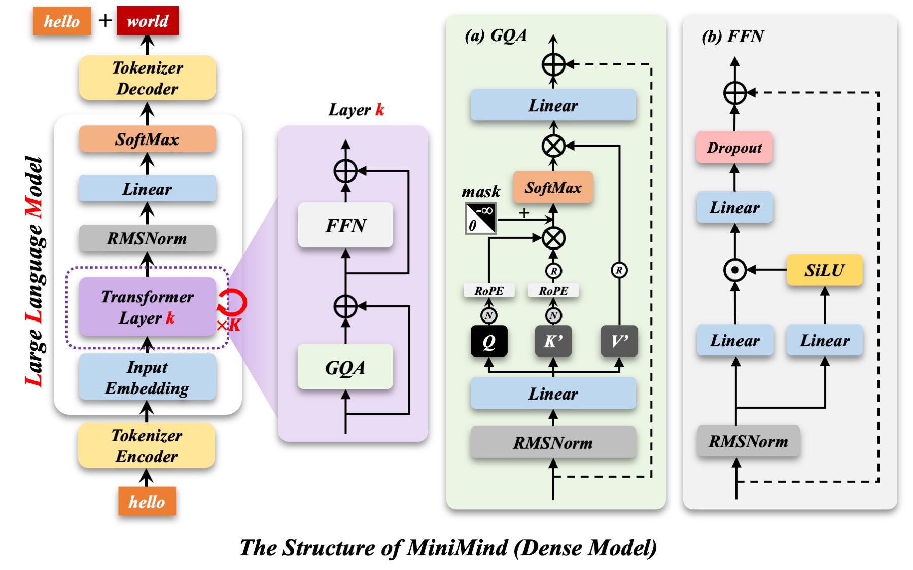
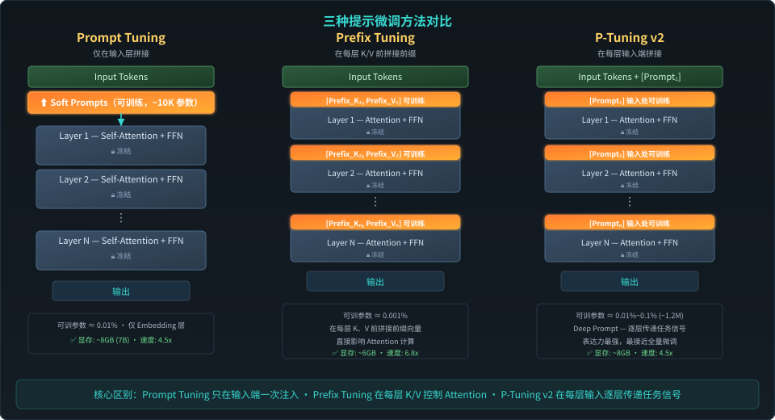
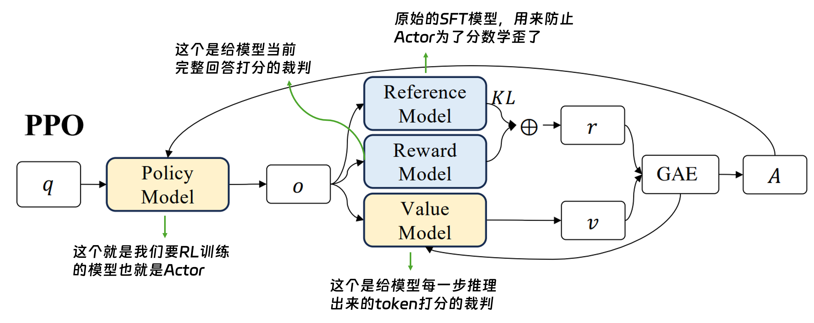
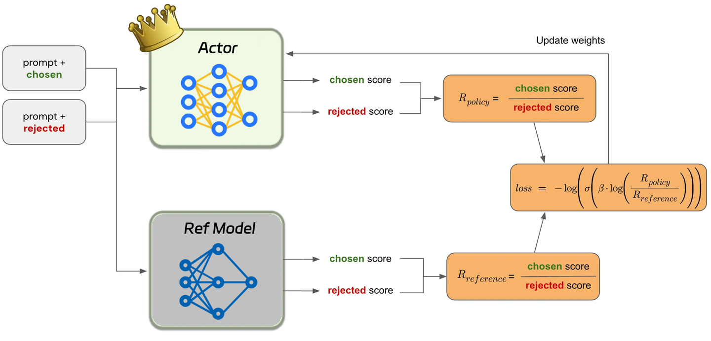
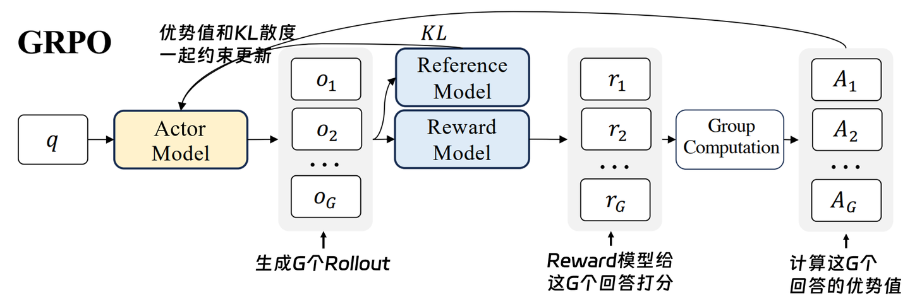

大模型微调技术
从 SFT、Prompt Tuning、LoRA 到强化学习对齐，理解后训练如何把通用模型变成可靠的任务专家。
本课的四条主线
SFT
用指令-回答对训练模型，让它学会遵循任务、格式和表达风格。
Prompt Tuning
冻结模型主体，只学习连续软提示向量，适合多任务快速切换。
LoRA / QLoRA
在权重矩阵内注入低秩适配器，以很低成本获得接近全量微调效果。
RL / DPO / GRPO
用偏好或可验证奖励优化策略，让模型不只模仿，还能探索更优解。
大模型的基本结构：Transformer

Encoder（编码器）
通过多头自注意力 + 前馈网络，将输入序列编码为上下文感知的隐藏表示。
Decoder（解码器）
自回归生成输出，通过 Masked Self-Attention + Cross-Attention 逐步预测下一个 token。
核心组件
Multi-Head Attention、Layer Norm、残差连接、Feed-Forward Network（FFN）——这些组件堆叠 N 层构成了现代大模型的骨架。
一个真实问题：大模型“不听话”
模型有能力，但行为没有被约束到“你真正需要的输出形态”。微调解决的正是这种能力到行为之间的落差。
为什么会这样？
知识泛而不精
预训练来自海量通用文本，覆盖广，但在法律、医疗、金融等垂直领域缺少精准任务经验。
格式不受控
预训练目标是下一个 token 预测，天然偏向自然语言续写，而不是严格 JSON、代码或 Schema。
偏好未对齐
互联网文本不是高质量指令数据，模型学到的是统计相关性，不等同于安全、有用、听指令。
什么是微调？
微调是在预训练模型基础上，用少量高质量、特定任务或领域数据继续训练，使模型适配下游任务的过程。
少量高质量数据
通常是几千到数百万条精心构造样本，质量远比数量更关键。
特定任务目标
学习指令遵循、输出格式、领域语气、工具使用或偏好排序。
改变行为而非结构
基础模型架构保持不变，重点调整参数或适配器带来的行为模式。
Prompt、RAG、微调：什么时候用谁？
低成本 / 低上限
事实知识增强
行为深度改变
最高上限 / 高成本
如果问题是“缺资料”，优先 RAG；如果问题是“行为模式不稳定”，微调更合适；如果只是简单任务，Prompt 工程常常足够。
SFT
监督微调
最基础、最稳定、最常见的后训练起点：让模型模仿高质量标准答案。
SFT 是什么？
输入：Instruction
明确的任务描述或问题，例如“请用 Python 实现快速排序”。
本质：Imitation Learning
模型观察标准答案，学习表达风格、逻辑结构和回复格式。
目标：Response
人类认可的高质量回复，是模型学习的金标准。
SFT 仍然使用语言模型的下一个 token 预测目标，只是训练样本变成了高质量指令数据。
一个具体的 SFT 样本
请用 Python 实现一个快速排序算法。
def quick_sort(arr):
if len(arr) <= 1:
return arr
pivot = arr[len(arr) // 2]
left = [x for x in arr if x < pivot]
mid = [x for x in arr if x == pivot]
right = [x for x in arr if x > pivot]
return quick_sort(left) + mid + quick_sort(right)
训练后，模型学到“实现代码”这类指令通常应直接返回代码，而不是先输出长篇算法解释。
SFT 数据格式：和推理模板一致
<|system|>你是一个有帮助的编程助手。<|end|>
<|user|>用 Python 写一个快速排序。<|end|>
<|assistant|>def quicksort(arr):
if len(arr) <= 1:
return arr
...
<|end|>
Mask 策略
通常只在 Assistant 回复部分计算损失。
格式一致
训练模板必须与推理时的 Chat Template 对齐。
质量优先
几千条高质量样本往往胜过大量低质量样本。
SFT 的“冰山理论”
水面以上：看得见的行为
学习 JSON、Markdown、代码块等输出格式；学习语气、详略程度和角色扮演方式。
水面以下：激活已有知识
SFT 主要不是注入全新知识，而是让模型在正确语境中调用预训练阶段已经学到的知识。
SFT 的优势与局限
优势
- 简单直接：指令-回答对即可训练。
- 效果稳定：对格式、风格、任务遵循控制力强。
- 工程成熟：TRL、Deepspeed、LLaMA-Factory 等工具链完善。
局限
- 高度依赖数据质量，Garbage In, Garbage Out。
- 容易过拟合，通常 1-3 个 epoch 即可。
- 本质是模仿，难以超越标注数据的能力上界。
Prompt Tuning
提示微调
把人工写提示词，升级为可学习的连续向量。
从离散提示到连续提示
传统 Prompt
“请按 JSON 格式输出：”
离散 token，靠人工试错。
Soft Prompt
[P1, P2, P3, Input Tokens]
连续向量，通过梯度下降自动优化。
Frozen LLM
模型主体参数冻结。
只训练少量提示向量。
核心价值：用极少参数在高维嵌入空间中搜索更有效的任务表示。
三种主流软提示方法
| 方法 | 插入位置 | 特点 | 适用场景 |
|---|---|---|---|
| Prompt Tuning | 输入 Embedding 层 | 最轻量，仅拼接可学习向量 | 10B+ 大模型、多任务切换 |
| Prefix Tuning | 每层 Key / Value 前缀 | 直接影响 Attention KV 缓存 | 长文本生成、摘要任务 |
| P-Tuning v2 | 每层输入端 | 深层 Prompt Tuning，表达力更强 | 结构化理解、NER、关系抽取 |
架构对比：插入位置决定控制力

核心区别：Prompt Tuning 只在输入端注入一次；Prefix Tuning 在每层 K/V 控制 Attention；P-Tuning v2 逐层传递任务信号。
多任务切换：提示微调的杀手锏
基础模型
7B / 13B 模型只加载一份到 GPU。
翻译 Prompt
KB-MB 级向量文件。
摘要 Prompt
热切换，无需换模型。
分类 Prompt
多任务服务成本很低。
任务输出
由软提示引导生成或分类。
局限同样清晰：小模型效果差、收敛较慢、表达能力通常弱于 LoRA。
LoRA
低秩适配
低成本微调的工业标准：只训练两个小矩阵，却能修正模型内部权重变化方向。
为什么需要 LoRA？
显存需求爆炸
全量微调不仅要存权重，还要存梯度和优化器状态，13B 模型常需 50GB+ 显存。
任务副本昂贵
每个任务保存一份完整模型，存储与部署成本不可持续。
多数变化低维
适配任务时真正需要改变的方向很少，可以用低秩矩阵近似权重更新。
LoRA 的核心假设：权重更新 ΔW 具有低本征秩，可以分解成两个小矩阵的乘积。
核心数学：W = W₀ + BA
d × d
冻结
d × r
可训练
r × d
可训练
r ≪ d
常用 r=4、8、16、32。
参数骤降
从 d×d 变为约 2×d×r。
训练稳定
常见初始化：A 随机，B 为 0，初始 ΔW=0。
训练阶段与推理阶段
冻结 W₀，只训练 A/B
- 显存开销低，训练状态更稳定。
- 不破坏原模型的基础表达能力。
- 可为不同任务保存不同适配器。
合并权重，零额外延迟
- W = W₀ + (α/r)BA。
- merge_and_unload 后等价于普通模型推理。
- 这是 LoRA 相对 Adapter 的重要优势。
QLoRA：把显存再压下去
NF4 量化
4-bit NormalFloat 利用权重近似正态分布的特性，降低量化损失。
双重量化
对量化常数本身再量化，每参数额外节省约 0.4 bit。
分页优化器
显存峰值溢出时把优化器状态迁移到 CPU 内存，降低 OOM 风险。
实践上，QLoRA 让 RTX 3090/4090 等消费级 GPU 跑通 7B-13B 模型微调成为现实。
实践配置：从可靠默认值开始
| 配置项 | 推荐起点 | 说明 |
|---|---|---|
| rank r | 8 或 16 | r 越大表达力越强，但参数和显存增加。 |
| alpha | 2r | 常见 alpha/r 约为 2，作为更新强度缩放。 |
| target modules | q_proj + v_proj | 最小配置；标准配置可加 o_proj、gate_proj。 |
| dropout | 0.05 | 小数据集上有助于缓解过拟合。 |
| 学习率 | 1e-4 到 2e-4 | LoRA 常可使用高于全量 SFT 的学习率。 |
RL Alignment
强化学习对齐
从“模仿答案”走向“优化策略”：偏好对齐与可验证奖励让模型探索更好的回答。
为什么 SFT 之后还需要 RL？
SFT 的根本局限
- 被动模仿人类示例，不理解目标函数。
- 无法稳定超越标注者水平。
- 缺少探索机制，难以发现更优解法。
RL 的引入价值
- 通过尝试-反馈循环优化策略。
- 用奖励表达安全性、有用性、客观性等偏好。
- 数学与代码任务可用验证器提供自动奖励。
SFT 是“学老师怎么做”；RL 是“自己试，做对了就强化”。
LLM 里的强化学习概念
| RL 概念 | 符号 | 在大模型中的对应 |
|---|---|---|
| 状态 State | st | Prompt + 已生成 token 序列 |
| 动作 Action | at | 选择下一个 token |
| 策略 Policy | πθ(a|s) | LLM 输出的概率分布 |
| 奖励 Reward | r | 奖励模型打分、人工偏好、单元测试或答案校验 |
| 价值 Value | V(s) | 当前状态未来回报的估计 |
RLHF：ChatGPT 时代的经典三阶段
SFT
指令 + 人类编写标准答案，得到初始策略模型。
Reward Model
同一 prompt 的多个回复排序，学习人类偏好分数。
PPO
模型生成答案，奖励模型反馈，用策略梯度更新。
瓶颈：需同时维护 Policy、Reference、Reward、Value 等模型，显存开销大，PPO 对超参数敏感。
PPO：带 KL 约束的在线策略优化
Prompt
采样训练问题，输入当前策略模型。
Policy πθ
生成回答，并记录 token 概率。
Reward Model
对完整回答打分，形成优化目标。
Reference πref
提供 KL 惩罚，防止模型偏离太远。
Value / Critic
估计回报，降低策略梯度方差。
PPO Update
裁剪目标函数，小步更新策略模型。
PPO 示意图

DPO：直接偏好优化
Prompt x
同一个问题或指令。
Chosen y+
人类偏好的回答。
Rejected y-
相对较差的回答。
Policy πθ
拉高 chosen 的相对概率。
Reference πref
约束更新幅度，避免过度漂移。
DPO Loss
把偏好学习写成监督损失。
去掉显式 RL
不再单独训练 Reward Model，也不跑 PPO 在线采样。
直接吃偏好对
训练数据就是 chosen / rejected，目标是扩大两者的 log-prob 差距。
稳定、便宜、易复现
工程复杂度接近 SFT，是离线偏好对齐的常用默认方案。
DPO 示意图

GRPO：推理 RL 的关键路径
Prompt
数学、代码或可验证任务。
Group Sampling
同一问题生成 K 个候选答案。
Verifier Reward
答案校验、单元测试或规则函数打分。
Group Baseline
用组内平均奖励替代 Value Critic。
Relative Advantage
高于组均值的样本被强化，低于组均值的样本被抑制。
Policy Update
带 KL 约束更新，鼓励可验证的推理路径。
GRPO / RLVR 的价值在于：奖励可以由验证器自动给出，模型能在没有人工推理轨迹标注的情况下发展出反思、验证和长链推理行为。
GRPO 示意图

对齐与推理方法对比
| 方法 | 奖励来源 | 需奖励模型 | 需 Critic | 核心场景 |
|---|---|---|---|---|
| RLHF + PPO | 人类偏好训练出的 RM | 是 | 是 | 通用对话、安全与风格 |
| DPO | 偏好对中的隐式奖励 | 否 | 否 | 离线偏好对齐，稳定易训 |
| GRPO | 可验证规则 / 函数 | 否 | 否 | 数学、代码、逻辑推理 |
| DAPO / RLVR | 可验证奖励 + 长链优化 | 否 | 否 | 2025-2026 推理增强范式 |
四类技术的核心定位
SFT
激活已有知识，学习指令遵循与特定格式，是高级方法的起点。
Prompt Tuning
参数极少，多任务切换成本低，但表达能力通常弱于 LoRA。
LoRA / QLoRA
工业标准的参数高效微调，兼顾成本、效果和部署便利。
DPO / GRPO / RLVR
从偏好对齐到推理增强，用奖励信号推动模型超越模仿。
给学生的实践路线
跑通 QLoRA SFT
跑通 LLaMA-Factory + Alpaca 或领域数据集，对比微调前后的指令遵循和格式稳定性。
做消融实验
对比 r=4/8/16/32、不同 target modules 和数据质量对效果的影响。
DPO 与 GRPO
用偏好数据做 DPO；在数学或代码任务中尝试可验证奖励训练。
工具推荐：LLaMA-Factory、Unsloth、HuggingFace PEFT、HuggingFace TRL。
Q & A
微调不是“让模型记住更多”，而是让模型更可靠地把已有能力用在正确的任务行为上。